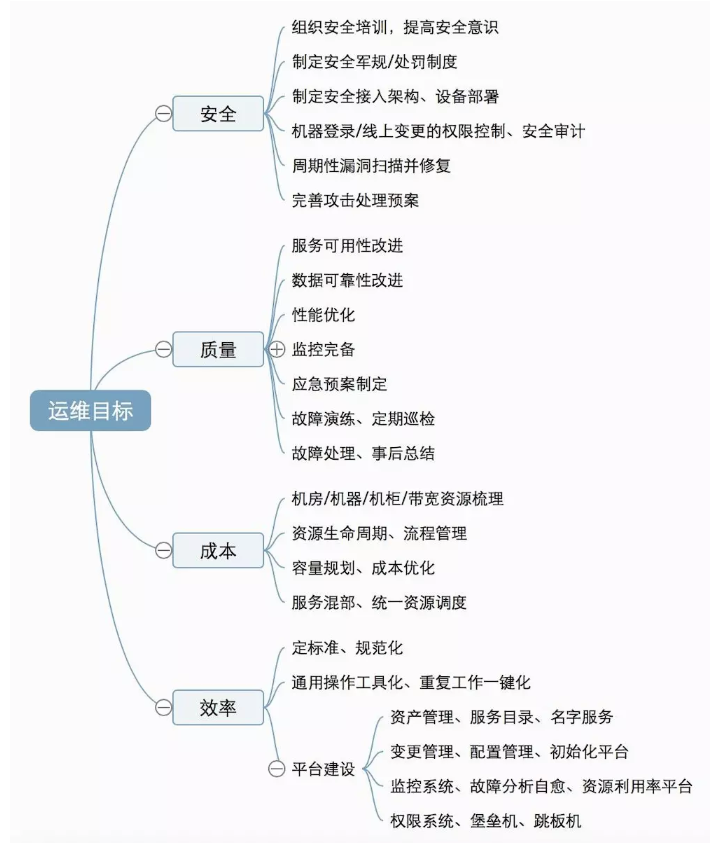
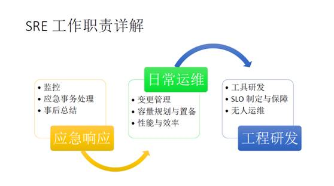

一 用一句话来概括运维的价值
这里分三次概括, 其实是一个意思
-
为产品提供可控成本下高质、高效的运维服务
-
花更少的钱，让产品更快迭代，更稳定运行
-
能够做到无缝、安全、不停的变更管理，是运维部门能给公司做的最大贡献
有些运维同仁概况了运维九字真言“安全稳定高效低成本”，说的非常到位。 大部分公司,运维部门应该会有以下4个团队:
- 业务运维 （负责和具体的业务部门对接,利用现有的工具和开源技术，解决业务部门的各类运维需求）
- 运维开发 (负责整个运维团队的工具建设，形成一套运维工具平台)
- 系统运维 （负责整个基础设施的稳定、包括操作系统定制、虚拟化、机房网络管理等）
- 监控运维 (7*24小时倒班,有问题直接call相应的运维和研发人员进行解决)
当然,可能还会有单独的"安全运维"小组，以及和运维部并立的"DBA"团队. 我认为无论在哪个团队，运维工程师们都应该把“安全稳定高效低成本”这个九字真言牢记心头,对自己做的工作从九字真言的角度去展开思考和进行效果衡量.
二 思维导图
安全、稳定、高效、低成本，怎么才能把这四大目标做好？应该做哪些事情来达成目标？用一张脑图来梳理一下：

三 参考文章
这篇文章是在微信公众号看到并收藏的. 感谢原文作者---秦晓辉。
关于秦晓辉大神，我所记得的2件事情:
- 是小米开源监控系统open-falcon的主程
- 每天6点到公司，一天可以比别人多做很多事情
四 关于DevOps和SRE
- DevOps，很多人理解为就是让研发部门做运维的事，或者运维部门做研发的事情，但实际上DevOps在国外的定义更宽泛一点。DevOps的思想更多的是说把整个开发流程的界限打通，产品有的时候也要干一些研发的事，研发有时候把这个信息要很快的反馈给这个产品，开发和运维或者QA和运维之间的界限也打通。
- SRE就是DevOps的思想在开发和运维之间的一个平衡.
SRE工作职责

这个图是我发明的，书中没有提到。书里大概有二十多章的内容是在讲SRE的各种日常工作，简单提了一下它的金字塔模型，于是我归纳总结了一下。这里是由下至上，下面的事份额比较大一点，上面的事份额比较小一点，分了三类。第一类，运维部门最重要的是应急响应这个问题，因为业务越来越大，与运营的结合越来越紧密，很多时候要处理的事情更多的是商业和运营上的事，也包括软件上的问题，这个部门最特殊或者最唯一的职责就是应急响应。之上是日常运维，保证机器能够正常更新、快速迭代。再往上是输出一些工程研发，无论是做工具，还是做高可用架构、提高可靠性，这些都是最上层的东西，只有把底下全部做好了才能说到上面。
应急响应
应急响应是运维部门在公司最独特的一点，表现为当公司出现问题时，应该找谁或者流程应该是怎样的。我回国之后见了不少初创企业，他们网站出问题了，往往是CEO先发现，CEO打电话“哎，这个到底是怎么回事啊”，然后每一个人都说“不知道啊，不是我负责呀，我得找谁谁”。不管多大一件事都得传遍整个公司，整个效率非常混乱。
我在Google待了八年时间，这样的流程也经历过，但是最近这几年Google非常重视这一点，建立了一整套应急事件处理方式。首先要有全面监控，监控这件事情是持久不断的，重中之重。SRE所有人都要非常了解整个监控系统在所有业务中的部署实施，其实这是我们平时花精力最多的地方。监控系统里面对整个系统所有方面都有监控，不光包括业务指标，也包括性能指标、效率指标。监控应该平台化、系统化，不停的往上积累，多做一些模板，同质化的系统就可以用同样的方法去做监控。
第二点是应急事务处理，应急事务处理分两部分，第一部分是演习，另外一部分是真正的处理流程。如何把它做好？实际上就是要不停的去演习、去做这个事情。像刚才举的例子，网站挂了，首先不应该CEO先发现，而应该是监控系统或者报警系统先告警，在发现之前就很应该明确这个东西应该谁排查，谁处理，这个信息应该早就发给合适的人去处理，甚至他应该早就在做了。如果发生特别大的，需要跨部门之间协作的问题，那不应该只是领导现场调配，而是整个组织每个人都明白这个流程应该是怎么样的，直接就做。Google甚至可以做到在一次事故中间两地交班，某个团队处理一半，然后我交接给另外一边团队，就下班回家了，持续不停的有人继续跟踪处理这件事情，而不会出现问题。这样一个模式是我觉得非常值得我们思考的。
处理完问题之后，要总结。之前听过的一个故事是，某公司业务出现了一个事故，大家加班加点，十几个小时没睡觉把这事搞定，然后领导过来就说了一句“大家辛苦了，回家睡觉吧”。但是，其实在这个时候我要说，领导光说这个其实恰恰是不够的。领导在这里应该问：为什么加班啊？这个事情为什么会发生啊，下次能不能不发生，大家能不能不加班，能不能不熬夜？这样才对, 能做到事后总结这个事情很难，但只有把这个做好了，才能降低以后问题发生的几率。
日常运维
日常运维做得最多的可能是变更管理。业务现在发展非常快，迭代速度、迭代周期非常快。其实这件事情能做好，能够做到无缝、安全、不停的变更管理，是运维部门能给公司做的最大贡献。
第二个，容量规划，当规模大到一定程度的时候，就需要有人来回答这个问题——到底要买多少新机器，能否保证明年的性能、效率，那谁来负责这件事呢？SRE部门提出这些方案，然后要确保这些指标、这些东西是有数据支撑的，确实能解决问题的。
工程研发
工程研发虽然做得少，但是工作很关键。SRE在工程研发上主要的工作，首先是帮产品部门确定一个SLO。SLO是一个服务指标，每一个产品都有一个服务指标。任何系统都不可能是百分之百可靠的，也没有必要做到百分之百可靠。这里得有一个目标，比如说可以每个月中断几分钟。这件事情是要产品部门考虑清楚的。比如我之前在YouTube做视频存储、视频点播的时候，要考虑每个视频到底是存一份还是存两份的问题，将这种问题放到一个非常大的部署规模里面的时候，只有产品部门能够拍板。说到底是要不要花这个预算，要不要花这么多钱去提高0.1%的可靠性或者0.01%的可靠性。
另外一点是无人化运维。大家都看过《黑客帝国》吧？一醒来发现大家都是电池，都是为机器服务的。其实把这个比喻放在运维部门非常合适。因为如果不停的开发出需要人来操作运维的系统，结果大家最后都是电池，明显是不可持续的。如果不停的产生这种需要人来操作的东西，不停的招人，最后就变成不停的运维这个东西。把整个流程自动化，建立一个能够应对复杂业务的平台，这就是工程研发上最需要的东西。
SRE模型成功的关键要素
SRE在Google有十几年的历史了。这个模型是如何成功的？我总结如下几点：
职业化
运维行业从来都说不清楚自己是干嘛的，这是不对的。很多人认为会操作Linux，或者是DBA、会配网络，就算运维了。实际上运维的范围要比这个大得多。运维应该是负责公司业务正常运转的角色，这才是真正的运维。在出问题的时候能解决问题，保障业务连续性，甚至避免问题发生，这才是运维职业的定义。
具体如何做呢？推演和演习。
推演是给你一套系统，你要分析出来它会有什么样的失败模式。我们当时经常在黑板上画系统图，大家一起讨论如果这个组件出问题了会发生什么情况，用户到底还能不能看视频了，用户购买流程还能不能走通。实际上这些过程很多时候软件开发是不考虑的，但是如何拆分、如何去保证每个环节的可靠，这才反是运维这个行业最关键的一点，所以一定要做这种推演。只有这种推演才能输出改变，让系统更可靠。
第二点是演习。我们当时每周都会进行一次小型灾难演习，例如把以前出现的问题拿出来一个，让新加入团队的人去演习，所有其他的人也都要去参加。这里主要是观察新人到底是怎么思考这个系统的，新人做出的决定到底是不是正确的。因为一个人做出的决定是不是正确的实际上取决于系统给的反馈到底是不是对的。Google认为运维复杂系统不是一个靠智商和记忆力就能解决的问题，不能依赖人一定要知道这段话或这个知识点，而是要知道一种方法，知道如何去排除问题或排查问题。运维系统应该提供足够的信息，让轮值的人能够用正确的方法去处理问题。这很像是背英语辞典和会用英语聊天的区别，你再怎么背辞典关键时刻也是要查辞典的，但是真正能运用这些信息解决问题，是比较难的。
此外，要区分责任和指责。责任和指责是两个事情，但是很多公司的运维经常分不清楚。什么叫责任，就是这个事到底谁负责。但是指责是另外一回事。例如一个员工敲错了一个命令，大家说 “都是因为他的错，给他扣工资、扣奖金，让他三天不吃饭”，但这其实并不真正解决问题。再例如，比如说一个系统设计电源插座，没有仔细考虑，很容易被人踢到，结果有人真踢到了，整个机房断电了出了很大的事故。那么从Google的理念来说这里不是人的问题，而是系统设计的问题。这里是不是应该有两套电源，是不是应该有保护？只有从系统设计问题的角度出发才能真正解决问题，而指责这个踢到插座的人，让他一个月不上班，甚至当时开除也并不能解决系统的设计问题，下回总会还有人踢到。
说一个故事，故事的内容是一个事故。某个数据中心有一排机器要断电，数据中心的人发了一个工单告诉操作员要把这个开关给关了。然后这个操作员去关，他关掉了开关，但是发现这一排机器的灯没灭，另外一排的灯却灭了——按错开关了。他检查一下发现按错了，“啪”把另外一个开关也关了，然后再把这一排机器给启动，结果由于启动时候过载导致整个数据中心都断电了，扩大了问题。如果单纯只是指责，这个人肯定完了，起码奖金没有了，能不能保证工作都不知道。但是Google 更关注的是这个东西为什么会容易出错，要么是开关颜色不对，要么是相同机器的操作方式靠得太近了，会让人产生这种错误的判断。所以你看Google的机房里都是五颜六色的，因为这样确实有用，比如热水管是红色的，制冷管是蓝色的，所以查起来很容易，区分起来很容易，尽量减少了这个问题。这个设计的思想在SRE日常工作里贯彻得非常深，每人在流程或工作的时候都要考虑到有没有被误用的可能，然后如何避免误用。
专业化
专业化体现在什么程度呢？要真正的去写代码，要能给业务系统或者给研发写的东西挑出问题，提高可靠性。
第一，减少琐事。运维中有很多虚假的工作。每天很忙，然而又不解决问题，做了很多假的工作。大家看起来好像很忙，一个屏幕上十几个窗口，各种刷屏，但完全不解决问题。更好的方式是用自动化、系统化、工具化的方式去消除这种琐事的存在。如果永远靠人工，那永远都闲不下来。
第二，回到SRE，SRE制度里有一条红线，运维的人只能把一半的时间花在运维上，另外一半的时间必须搞工程上、研发上的东西。研发可以是写工具，可以是参与系统设计，参与可靠性的提高，但是要保证运维不能只干运维。
第三点，我认为也是比较缺少的，运维部门光有责任没有决策权，所以大家都说一出事故，运维就背黑锅。怎么不背黑锅呢？说改这儿、改那儿，然后发现没有人批准改动，这是最大的问题。SRE做的最好的一点是管理层对SRE的工作方式非常认可、非常支持，他们认为服务质量是服务的一个重要指标。一旦上升到这个高度，SRE部门提出一些要求就比较容易理解，得到支持，因为他们是有事实根据的。当GoogleSRE发现生产出现问题的时候，标准的解决办法就是暂停所有更新，确保业务稳定。举个比较极端的例子，像刚才说的如果发现线上系统有问题的情况下，SRE是有权利拒绝接受业务更新的，只允许研发部门修bug，不允许加新功能。这个争议我在过去八年见过为数不多的几次，开发可以一直闹到 VP，SVP 这个级别。每一次都是听SRE的。
打通与产品团队的反馈回路
所有东西不都是百分之百稳定的，稳定性的提高要消耗成本，要增加更多的冗余，更多的容量，甚至只能花钱解决。运维部门的任务就是提供这些数据和方案。比如搞三个9、四个9，要如何达到，这在投入和系统设计上有很大区别。这个部分公司里没有其他人可以提出，必须要由运维部门提出。如果没有这个反馈回路的话，你会发现大家都很痛苦，很多时候做出的决定都是违背自然规律的。我看过很多这样的案例，上面拍脑门决定某个业务要100%稳定，完全不管下面怎么搞，由于反馈回路不存在或者这个反馈回路的信息流动不够顺畅，导致了这个东西最终实际做不好，这是SRE模型相当关键的一个地方。
五 SLO最佳实践
前言
- SLA （service level agreement）:服务等级协议
-
- 指的是整个协议，协议的内容包含了SLI，SLO以及恢复的方式和时间等等一系列所构成的协议
- SLI（service level indicator）:服务等级对象
-
- 指的是对象，例如：qps，响应时间，准确性等
- SLO（service level objective）:服务等级目标
-
- 指的是目标，例如：qps 99.99% ，响应时间10ms等
什么是服务？就是提供给客户的所有功能的集合。游戏业务来看，我们SRE给玩家、产品方提供的所有服务、功能等，都属于服务范畴。
那么我们提供的服务质量如何？怎么衡量和评价这些服务的质量？是否达到了大家一致的期望？这些正是SLO所描述并要解决的问题。
本文将以某个游戏项目为例子，阐述在游戏业务方面实践SLO的一些经验，希望能抛砖引玉、有更多的实践案例后续能分享出来，引起更多的思考和讨论。
为什么需要SLO
我们SRE常会遇到这些情况：
- 某天，运营同学告知，xx服务器有用户反馈掉线、或者卡机。这时候SRE经过一轮对服务器的基本检查，CPU、内存、网络、日志等都没什么异常，然后就没有然后了。
- 某天，QA反馈今年上半年xx产品的稳定性很差，SRE觉得并没有，因为故障次数比去年还低。QA同学却说产品很不满意某一次故障恢复用了2个小时……
以上的例子，其实暴露了一些问题点：
- 我们常规的系统指标都能反馈玩家用户发聩的掉线、卡机问题吗？
- SRE和产品对如何评价游戏质量的标准，有共识吗？
为了让产品和服务的用户体验和可靠性有客观的度量，为运维决策提供数据的支撑，为产品不同角色沟通提供焦点，我们需要和产品不同的角色一起，制定出大家都认可的SLO，并以此作为促进我们观察、衡量、改进业务的参考和目标。
《SRE WORKBOOK》里提到，“SRE的核心职责，不仅仅是将所有事情自动化而随时待命处理故障，SRE的日常工作都将按照SLO来开展，确保SLO在短期内是合理的，并可以根据SLI变化的情况适时对SLO做出调整”。另外也提到，“谷歌认为一个深思熟虑的SLO是做出决策的关键，这些决策包括了可靠性相关工作，和确定工作优先级排序等内容。SLO更像一种工具，可以帮助SRE确定哪个工作优先级更高”。 这样SRE的工作，在时间、精力有限的情况下，可以尽量聚焦到SLO反馈的质量或指标上面来。
SLO的特点
那么SLO的特点是啥？一个好的SLO有什么特点？
首先，SLO是一个可以度量、客观存在的、可以明确的指标。SLO是由客观的数据统计得来，是大家认同的、没有掺杂主观的看法。它的数据来源、收集方法、计算统计方法，也是必须明确的。最后SLO不是仅仅一次设定就永不变的，它是持续迭代的，会随着业务的特点、计算方法的改变等的改变而持续改变。
那什么样的SLO才算是好的SLO？有一个很重要的特点就是：同理心。好的SLO需要有同理心，能贴切反映用户使用服务的实际感受。我们尝试以用户的角度来观察一个服务，从使用服务开始的每一个步骤、细节里，找出我们最关注的东西，这样东西就有可能被提炼成SLO。说到底，SLO的设计需要围绕用户体验来设计，服务于产品。
例如，求职网站，用户关注的点应该是：
- 快速的页面加载
- 能够获取所有的职位
- 职位业务信息加载足够快
- 看到尽可能多的职位，即使不一定相关
而他们不怎么关注的点是：
- 所有的网站功能都可用
- 内容非常准确
- 避免显示不相关的职位
用游戏业务作为例子，例如一款回合制的MMORPG的游戏，玩家关注的点理应是：
- 可用性。即使是凌晨，如果游戏不可玩，也会影响玩家的摆摊收益
那他们不怎么关注的点是：
- 网络延迟。大多场景下，玩家对实时性的要求并不多。
同样，换成一款即时竞技类的游戏，影响玩家体验的点会和MMORPG有很大差别，他们更关注：
- 延迟或流畅度。延迟直接影响到整个游戏核心的体验。开打之后如果存在卡顿，会给玩家造成非常大的负面感受。
反而不怎么关注：
- 可用性。
可见，并不是所有的SLO都有普遍适用性。一个好的SLO必须依附一个能反馈用户体验的场景，并能量化成一些数据指标，来客观反馈出用户的主观体验。
如何制定SLO
从0到1制定SLO大致的流程是：
其中“设置SLO”这一步，并不是一蹴而就。其中比较重要的步骤是收集SLI。SLO的制定离不开SLI。
SLI 服务等级指标，即一些针对服务的监控项，例如“kcp退化率”、“访问延迟平均值”、“登录游戏成功率”等。SLI可以根据业务的特点，从可用性、延迟、数量、质量、结果正确性等等多方面覆盖。SLI是具体明确的并可以测量的，不同的系统有不一样的测量对象和方法。
我们通过将SLI或者几个SLI的组合进行一段时间的数据收集和观察，就可以到一个起始的SLO，例如：90%的匹配时长<120s。
FPS游戏的SLO实践
通常一款大世界架构、实时射击竞技类游戏，会分别有美服、亚服、欧服等几个大区，玩家根据自己的实际登录到不同的区域，匹配其他玩家后进行游戏。
如何选择SLI
首先明确的是，游戏相关的指标实在太多，我们需要聚焦。利用同理心，从用户角度出发，我们选了两个出发点：登录和战斗。 我们尝试从玩家行为来发掘：
- 下载游戏客户端
- 打开游戏，更新patch
- 登录账号，选择大区
- 进入大厅，等待匹配
- 进入战斗
- 战斗结束，回到大厅，继续等待匹配下一场战斗
这些过程中，可能会出现差评的会有哪些场景呢？我们按照登录和战斗这两大场景总结了一些如下：
- 登录
- 下载patch失败、过慢
- 登录账号失败
- 连接服务器失败
- 战斗
- 匹配时长过长
- 战斗延迟很高
- 卡顿
- 网络丢包或延时高
- 服务器处理慢
- 经常断线重连
以上说的这些，都会给玩家造成糟糕的体验。这时候，我们需要和产品研发一起对这些场景提炼出一些可观察的、可量化的指标出来。
在整理SLI的时候，有一个容易忽略的点，就是收集数据的范围是否有缺漏。例如要收集数据计算玩家的登录成功率，如果只是从服务端的日志数据收集，这个成功率就会存在偏高的可能，因为玩家可能因为网络、主动关闭等情况，还没登录到服务器就已经流失掉了。所以数据的收集的范围尽量考虑全面。 于是，我们和产品研发一起总结了以下SLI：
- 90%玩家的匹配时长
- 90%玩家的网络延时
- 进入战斗成功率
- 战斗重连率（战斗中断线重连的比例）
- 重新登录率（重新登录游戏的比例）
- 登录转换率（从玩家打开游戏客户端开始到最后进入游戏的比例）
然后和产品研发明确了数据收集的范围、计算方式：
-
日志收集方式：
- 服务器日志，通过
日志中心收集，并分流到ELK集群进行数据分析和统计 - 用户端体验系统，直接利用该系统提供的统计功能。这里主要是用来收集登录转换率这个指标
- 服务器日志，通过
-
计算方法：每个指标的计算方法都不一样，这里不一一详述了，计算方法一般使用xx比例、或者统计90分位的数据
SLO的制定
最后，我们编写监控插件，从ELK里面采集数据并计算结果，观察一段时间后，得出了初始的SLO：
| 指标 | SLO |
|---|---|
| 进入战斗成功率 | 开始战斗时，不低于XXX%玩家成功进入战斗 |
| 匹配时长 | XXX%玩家匹配时长不长于XXXs |
| 战斗服重连率 | 战斗中不超过XXX%玩家需要重连战斗 |
| 延时 | XXX%的玩家延时不超过XXXms |
同时在监控系统上创建了一个dashboard，并按照以上的阈值设置的报警。
SLO迭代与总结
SLO从制定开始，不是一成不变的，需要结合实际情况来不断迭代。我们需要收集各方面的信息来辅助我们评估SLO的制定：
- 舆情监控：论坛、贴吧、客服反馈等
- 产品研发的其他辅助数据或日志
- 每次报警调查
我们需要对SLO进行周期性的review，提高指标的度量精度、提高覆盖范围、调增阈值、或者挖掘更多反馈业务质量的其他SLO等等。通过持续地迭代，使得SLO更加能全面地、准确地、有针对性地反馈出目前整体业务的质量，为产品、研发、运维提供一个高度一致的目标。
该游戏项目的SLO也经历了多次修订，一般修订的原因是，随着产品运营的情况变化，一些SLI会随之变化，通过报警提醒，我们及时进行了修订，配合产品当时的运营情况。最后在实践过程中，SLO的确起到了监控质量的作用，报警让我们及时发现了一些潜在的问题，如某个区扩容出现问题、区域性的网络质量问题、程序内部的逻辑导致一些bug等，也得到了产品研发的认同和肯定。